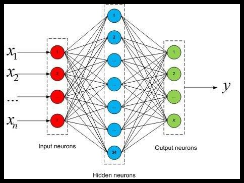
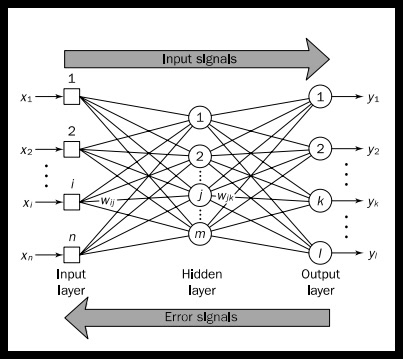
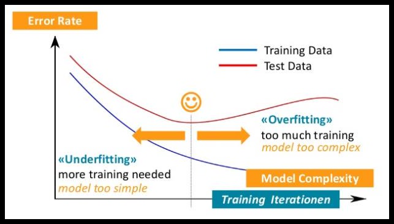
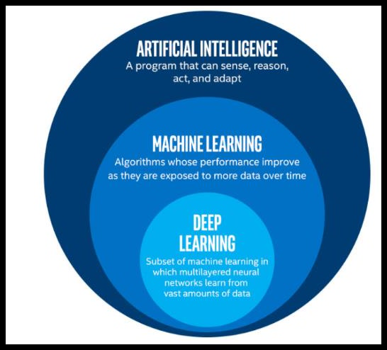
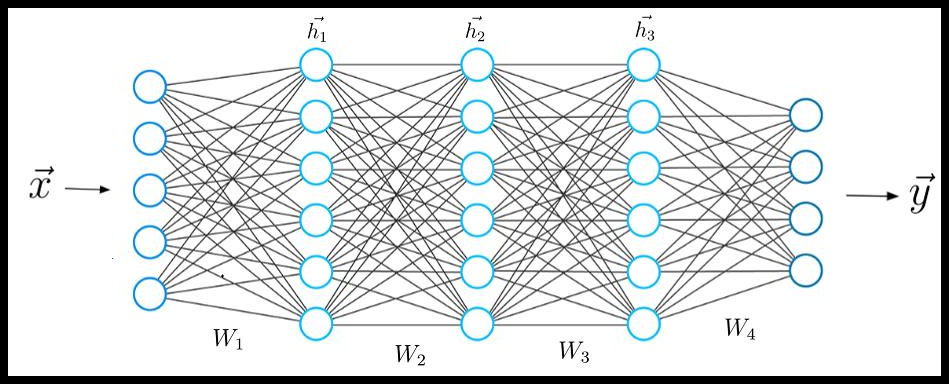
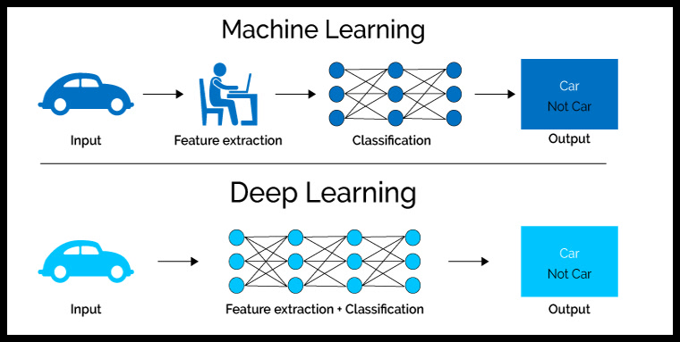
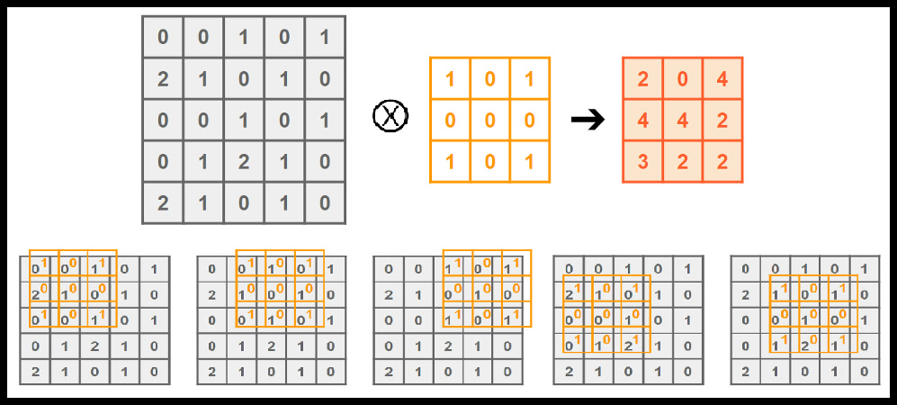
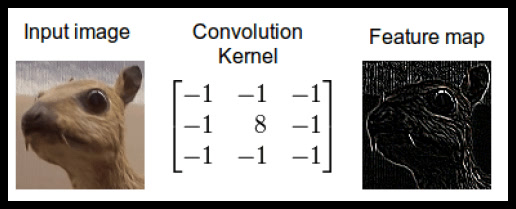
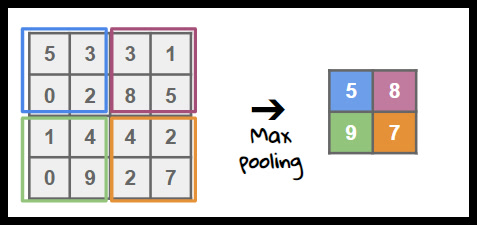
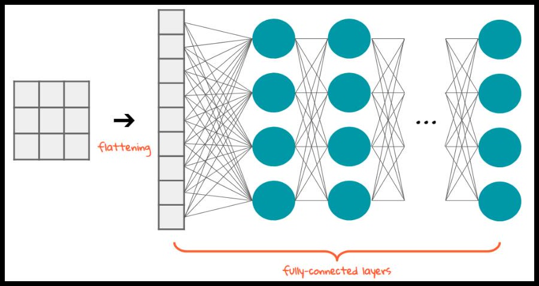

النص العربي الأصلي · الصفحات 63–81
الفصل الثالث: الذكاء الاصطناعي
الفصل الثالث :الذكاء الصنعي Artificial Intelligence -1-3مقدمة عن الذكاء الصنعي
-2-3لمحة عن التقنيات المستخدمة في الذكاء الصنعي
-3-3الشبكات العصبونية الصنعية
-4-3شبكات التعلم العميق وتقنية رؤية الحاسب
-5-3التحديات والحلول في عملية التدريب
63
الصفحة 64- 1-3مقدمة عن الذكاء الصنعي :Introduction to Artificial Intelligence -1-1-3المقدمة: منذ زمن بعيد حاول االنسان فهم كيف يفكر وهذا يشمل كيفية إدراك الواقع وفهمه وكيفية توقع ومعالجة المعلومات .يشير الذكاء الصنعي إلى محاكاة الذكاء البشري في اآلالت المبرمجة للتفكير مثل البشر وتقليد أفعالهم خاصة التعلم وحل المشكالت .بدأ العمل الجدي به بعد الحرب العالمية الثانية وحصل على اسمه الحالي عام 1956والزالت األبواب مفتوحة فيه للعلماء والباحثين.
-2-1-3المفهوم(Russell & Norvig, 2002a):
تعددت تعريفات الذكاء الصنعي بحسب الباحث ومجال اهتمامه والنقط األساسية التي تم التركيز عليها هي عمليات التفكير واالستدالل مقابل السلوك من جهة ،واألداء اإلنساني مقابل األداء المثالي من جهة أخرى وإن تقاطع ما سبق يعطينا أربعة مفاهيم تم العمل عليها وبحثها وهي: األداء اإلنساني: ويمثله اختبار تورينغ الذي صممه العالم أالن تورينغ 1950والذي ينص على اعتبار اآللة ذكية إذا استطاعت اإلجابة على أسئلة محقق بشري دون قدرته على معرفة هل االستجابة تعود إلنسان او آلة. التفكير اإلنساني: ومن األمثلة عليه نظام حل المشكالت العام General Problem Solver Newell and Simon 1961حيث ركز العالمان على استخدام نفس الخطوات التي يحل بها البشر المشكالت بغض النظر عن الدقة. التفكير العقالني: وهي تعتمد على أفكار ارسطو لبناء قواعد للتفكير الصحيح واالستدالل أو ما يدعى بعلم المنطق .كقولنا أحمد أطول من محمد ومحمد أطول من سعيد ،بناء على ما سبق نستنتج أن أحمد أطول من سعيد. التصرف العقالني: وهو يهدف للوصول ألفضل نتيجة متوقعه .وينطوي تحت هذا التعريف عمليا التفكير العقالني المنطقي عن طريق االستدالل .إال انه في بعض الحاالت ال يوجد شيء صحيح يمكن القيام به وإنما احتمال أن يكون أحد الخيارات أفضل من اآلخر وال يمكن الوصول لذلك باالستدالل فقط ،كما أن األفعال االنعكاسية كلمس سطح ساخن وسحب اليد مباشرة دون االنتظار لمنطقة األمور يعد الخيار األفضل.
64
الصفحة 65-3-1-3مقدمة تاريخية(Mijwel, 2015) (Russell & Norvig, 2002a):
استطاع العالمان Warren McCullochو Pitts Walterصنع أول نموذج لعصبونات صنعية تستجيب عند ورود منبه كافي من العصبونات المحيطة المتصلة بها ،وذلك باالعتماد على الفهم الفيزيولوجي آللية عمل العصبونات والتحليل المنطقي االفتراضي ونظرية تورينغ في الحساب ،على سبيل المثال بناء البوابات المنطقية ( .) not، or،andوتتالت بعدها األبحاث إال أنها كانت محدودة وتتوجت هذه الحقبة بآراء العالم تورينغ والذي وضع اختبار تورينغ إضافة لمفهوم تقليد عقل الصغار والذي يتمتع بالقدرة على التعلم بدل محاكاة طريقة تفكير الكبار. تمت والدة هذا العلم على يد العالم John McCarthyوالذي قام بجمع 10علماء عام 1956ولمدة شهرين كاملين في جامعة Dartmouthفي هانوفر .أهم ما توصلوا له هو )Logic Theorist (LT على يد العالمين Allen Newellو Simon Herbertوالتي مكنت الحاسب من التفكير وحل المشكالت منطقيا وليس عدديا .كما انها أسست لمجموعة من الباحثين إضافة لتالمذتهم والذين عملوا على تطوير هذا المجال في السنوات الالحقة. بدأت بعدها فترة ازدهار حيث ظهرت العديد من تطبيقات للذكاء الصنعي والتي أثبتت أن الحاسب يستطيع أن ينجز ما هو أكبر من العمليات الحسابية .ومن األمثلة نظام حل المشكالت العام ( Newell )and Simonوالذي استخدم مبدأ التفكير اإلنساني ونظام حل النظريات الهندسية ( Herbert )Gelernter 1959ونظام لعب الشطرنج ( )Arthur Samuelوالذي أثبت إمكانية تحسين أداءه وأن يغلب مصممه .كما صمم McCarthyلغة LISPوالتي استخدمت لفترة طويلة كلغة برمجة ألغراض الذكاء الصنعي .تم أيضا إيجاد العديد من التطبيقات ولكن اصطدم العلماء في هذه المرحلة بقلة الموارد وضعف إمكانيات الحواسيب المتوفرة آنذاك. أخذت األمور تتوضح أكثر مع الوقت (نهاية ستينيات وبداية سبعينيات القرن الماضي) ،فالتفاؤل المفرط لبعض العلماء في تقدر إمكانيات الذكاء الصنعي حينها تبين أنه غير دقيق ألنه مبني على تجارب ضمن بيئة محدودة األبعاد وال تنطبق على أرض الواقع .كما تبين أن بعض المسائل كالترجمة والتي كانت تحوز على دعم حكومة الواليات المتحدة غير مجدية مما أدى إليقاف الدعم المقدم ،وإضافة لما سبق فقد تبين عدم صحة التفكير السائد حينها بأن محدودية الذكاء الصنعي في ذلك الوقت هو بسبب محدودية قدرات الحاسب حينها وهذا غير دقيق. حيث بدأت مرحلة الركود وانحطاط إن جاز التعبير للشبكات العصبونية لألسباب الموضوعية التي ذكرت سابقا .فقد تم التركيز في المراحل السابقة على بناء أنظمة ذكية تتمتع بالذكاء العام وهذا كان نقطة ضعف ألن هذه األنظمة لم تستطع عمليا تحقيق نتائج جيدة فانحصرت أهميتها في بعض األلعاب والمسائل البسيطة وتوقف الدعم الحكومي لها .فكان التوجه بعدها لبناء أنظمة تتمتع بالقدرة على حل 65
الصفحة 66مشكالت محددة وكان أول نظام خبير هو برنامج DENDRALكان الهدف منه بناء نظام يستطيع تحليل مكونات التربة على سطح كوكب المريخ عبر قراءة األمواج الناتجة عن مقياس الطيف الضوئي. ولتحقيق ذلك قاموا باالستعانة بخبراء وبناء قواعد محددة مستندة إلى خبرتهم .وتعددت األنظمة الخبيرة في هذه الحقبة وتطورت لغات البرمجة وإمكانيات الحاسب بشكل متزامن. في نهاية ثمانينيات القرن الماضي تهيأت الظروف الموضوعية لعودة الشبكات العصبونية الصنعية حيث تم االستفادة من دروس الماضي والتركيز على إيجاد أنظمة خاصة لحل مشكلة محددة .كما تم االستفادة من تطور لغات البرمجة وإمكانيات الحاسب .إضافة إلى ذلك فإن تطور خوارزميات التعلم للشبكات العصبونية وعلى رأسها back-propagationكان له دور كبير في عودة الشبكات العصبونية الصنعية وبقوة وفي مختلف المجاالت.
66
الصفحة 67-2-3لمحة عن التقنيات المستخدمة في الذكاء الصنعيOverview of the :
techniques used in artificial intelligence تطورت تقنيات الذكاء الصنعي عبر الزمن بشكل موازي لتطور مفهومنا عنه وفيما يلي لمحة عن بعض أهم التقنيات:
-1-2-3خوارزميات البحثSearch Algorithms:
تعتبر من أولى التقنيات المستخدمة ،تتلخص بالسعي لتجريب كل الحركات الممكنة كما في لعبة الشطرنج .تطورت تقنيات البحث مع الزمن ففي البداية كانت تسعى للبحث بشكل أعمى وغير موجه، وذلك كان له تبعات على السرعة وتعقيد المشكلة المراد حلها .ثم تم تطوير تقنيات البحث مع االستدالل والتي جعلت هذه الخوارزميات أكثر كفاءة .من األمثلة المشهورة عليها برنامج لعبة الداما لصموئيل. )(Jones, 2008
-2-2-3األنظمة الخبيرةExpert System:
الفكرة األساسية لهذه األنظمة تتمحور حول نقل المعرفة من إنسان خبير Expertفي موضوع محدد إلى الحاسب ويقوم بهذه المهمة مهندس معرفة Knowledge Engineerحيث تدون المعلومات على شكل قواعد وفي النهاية يقوم المستخدم عبر واجهة معدة مسبقا بالحصول على النصيحة وحتى التفسير وفق المعطيات التي يزود النظام بها(Liao, 2005).
من أشهر األنظمة الخبيرة نظام DENDRALوالذي استخدم للتحليل الكيميائي لتربة المريخ لمعرفة البنية الجزيئية عبر تحليل إشارة مقياس الطيف الضوئي واالعتماد على مجموعة من القواعد وضعها خبراء في ذلك المجال لتحقيق ذلك ،حيث كان من االستحالة ارسال آالت تحليل كيميائية تقليدية. )(Feigenbaum & Buchanan, 1994
يؤخذ عليها أن مخرجات النظام ثابتة دون ابداع عكس الخبير البشري ،كما أن أي خطأ في عملية نقل المعرفة ستؤدي لنتائج خاطئة ،يضاف إلى ذلك الكلفة العالية لتصميم النظام وتعديله في حال الحاجة إلضافة او تعديل القواعد(Cowan, 2001; Partridge, 1987).
67
الصفحة 68-3-2-3تعلم اآللةMachine Learning:
يمكن توصيفه ببساطة على أنه التعلم باألمثلة ،وهو يقسم إلى (Bonaccorso, 2017; Jatana, ):2019
التعلم تحت اإلشراف Supervised Learning
يوجد هنا مرجعية لما هو صحيح وخاطئ ويتم تحسين األداء من خالل تقليل الخطأ الحاصل .وتقسم إلى:
.1خوارزميات االنحدار Regressionوهي ذات مخرجات رقمية مستمرة مثل قيمة ضغط أو وزن ،من األمثلة عليها :االنحدار الخطي ،Linear Regressionآلة الشعاع الداعم ،SVM شجرات القرار ،Decision Treeالغابة العشوائية ،Random Forestخوارزميات التعزيز ،Boostingالشبكات العصبونية .Neural Networks
.2خوارزميات التصنيف Classificationوهي ذات مخرجات محددة تشير لصنف معين مثل تحديد صورة ألي صنف تنتمي من بين 3أصناف ،من األمثلة عليها :االنحدار اللوجستي ،Naive Bayes ،Logistic Regressionآلة الشعاع الداعم ،SVMشجرات القرار ،Decision Treeالغابة العشوائية ،Random Forestخوارزميات التعزيز ،Boosting الشبكات العصبونية .Neural Networks
التعلم دون إشراف Unsupervised Learning
ال يوجد هنا مرجعية وإنما يتم استخالص العالقات الموجودة ضمن البيانات وتجميعها وفقا للتشابهات فيما بينها .من أشهر الخوارزميات المستخدمة .K-means
التعلم المعزز Reinforcement learning
ال يوجد هنا معلم أو مرجعية ،وإنما يتم توجيه عملية التعليم عبر نظام للمكافأة والعقاب أثناء عملية التدريب ،وهذا ضروري في البيئة المتغيرة بشكل مستمر والتي ال يمكن التنبؤ بما سيؤول إليه الوضع فيها .كما في ألعاب الفيديو فيوجد هدف استراتيجي بعيد وأهداف أخرى آنية قصيرة المدى ،حيث يمكن للتعلم المعزز اتخاذ قرارات آنية وعقالنية قد تقبل بالخسارة اآلنية مقابل الربح على المدى البعيد مثال.
68
الصفحة 69-4-2-3الخوارزميات التطورية والجينيةEvolutionary and Genetic Algorithms :
تعتمد هذه الخوارزميات المبادئ األساسية للبيولوجيا ولنظرية التطور واالصطفاء الطبيعي والطفرات العفوية والبقاء لألفضل .وبالتالي إيجاد الخواص األصلح لحل مشكلة ما وذلك من خالل فناء األجيال ذات الخواص غير المناسبة وبقاء وتعزيز األجيال ذات الخواص األصلح عبر التزاوج فيما بينها وتبادل هذه الخواص بشكل عشوائي عند االنتقال لألجيال التالية مع السماح بحصول طفرات عشوائية بنسبة ضئيلة مما قد يسمح بحدوث خواص جديدة لم تكن موجودة مسبقا تساعد على حل المشكلة(Coello, . )2005; Yu & Gen, 2010
69
الصفحة 70-3-3الشبكات العصبونية الصنعية :Artificial Neural Networks
-1-3-3المفهوم:
إن فكرة الشبكات العصبونية الصنعية مستوحاة أساسا من الخاليا العصبية الحيوية وتشابكاتها في الدماغ (شكل .)25يتألف كل عصبون من مدخالت ودالة ومخرج وحيد تقابل االستطاالت النجمية والجسم والمحور األسطواني للخاليا العصبية على الترتيب .أما الشبكة العصبونية فتترابط بها العصبونات على طبقات متتالية .تتكون الشبكة العصبونية بأبسط أشكالها من طبقة اإلدخال تليها طبقة خفية ثم طبقة اإلخراج (شكل .)26يرتبط كل عصبون مع كل العصبونات في الطبقة السابقة ويتصل مع كل العصبونات في الطبقة الالحقة(Scarborough & Somers, 2006) .

70
الصفحة 71{kind=link}

-2-3-3عملية التدريب:
يتم تدريب الشبكة باستخدام قاعدة بيانات تحوي على المدخالت والمخرجات .يتم تقسيم البيانات لثالث مجموعات ،مجموعة التدريب Trainingومجموعة التحقق Validationومجموعة االختبار .Testing تتم عملية التدريب بإدخال المدخالت في مجموعة التدريب للشبكة وحساب الخرج ومقارنة خرجها مع القيمة الحقيقية وتعديل االرتباطات ضمن الشبكة بحيث يتم تقليل الخطأ الحاصل ويعبر عنه بمصطلح الفقد Lossوهو مقدار الخطأ في عملية التنبؤ (شكل ،)27يتم تكرار عملية التدريب لعدة مرات وفي كل مرة يتم حساب دقة الشبكة على مجموعة التحقق ،بشكل نموذجي سنالحظ تحسن دقة الشبكة في كل من مجموعتي التدريب والتحقق(عملية التعلم) حتى نقطة معينة نالحظ وجود افتراق بين المجموعتين حيث تتحسن الدقة في مجموعة التدريب وتتناقص في مجموعة التحقق ،عند هذه النقطة نصل لما يسمى over-fittingأي تتوقف عملية التعلم وننتقل لعملية الحفظ البصم لمجموعة التدريب لذلك تسوء نتيجة النموذج في مجموعة التحقق (شكل .)28بعدها يتم إعادة حساب دقة النموذج على مجموعة مستقلة تدعى مجموعة االختبار وهي تمثل النتيجة المتوقعة للنموذج عند تطبيقه على أرض الواقع ( Smola .)& Vishwanathan, 2008
71
الصفحة 72{kind=link}

{kind=link}

72
الصفحة 73-3-3-3ميزات وعيوب الشبكات العصبونية الصنعية:
•مميزاتها:
تتميز الشبكات العصبونية بقدرتها على تمثيل العالقات في الحاالت التالية(Scarborough & . ):Somers, 2006) (Sarle, 1994
العالقات المعقدة والمتداخلة. العالقات غير المعلمية Nonparametric Relation. العالقة بين المتغيرات التابعة والمستقلة غير قوية. وجود تباين عالي غير مفسر. ال يمكن وضع أساس نظري واضح لعملية التنبؤ أو التصنيف.
كما تتميز الشبكات العصبونية الصنعية بخصائص تجعل تطبيقها أمر ممكن وفعال( & Niavarani :)Wickramasinghe, 2014
ال تحديد لنوع المدخالت والمخرجات والتي قد تشمل المتغيرات الكيفية أو الكمية أو مزيج منها. ال يوجد افتراضات مسبقة للتوزع االحصائي للمتغيرات والعالقات فيما بينها. ال تحديد لعدد المدخالت والمخرجات. تتميز بالكفاءة الحسابية وبالتالي تحليل البيانات بالوقت الفعلي تعد الشبكات العصبونية نظام انحدار غير خطي ديناميكي ومرن.
•عيوبها(Hastie, Tibshirani, & Friedman, 2001): بناء نموذج جيد يحتاج لتدريب جيد يعتمد على وجود بيانات كافية وجيدة. من الصعب معرفة ما يحصل بالضبط ضمن النموذج (صندوق أسود) وما يظهر فعلياً هو الدخل والخرج.
73
الصفحة 74– 4-3شبكات التعلم العميق والرؤية الحاسوبيةDeep Learning and Computer : Vision -1-4-3التعلم العميق: هو أحد فروع تعلم اآللة (شكل ،)29ظهر بداية عام .2006يستخدم بشكل أساسي للتعرف على األنماط .تكون الشبكة مؤلفة من عدة طبقات من العصبونات متسلسلة بشكل هرمي (شكل ،)30والهدف من هذا التصميم استخالص المعلومات والمالمح المفيدة وهذا ما يميزه عن تقنيات تعلم اآللة التقليدية حيث يتم تحديد المالمح المفيدة في عملية التصنيف مسبقاً ويتم استخراجها باستخدام تقنيات خاصة مستقلة غير متضمنة ضمن الشبكة العصبونية .قد يكون هذا النوع من التعلم مع إشراف أو بدون إشراف (شكل )Vargas, Mosavi, & Ruiz, 2017(.)31
{kind=link}

74
الصفحة 75{kind=link}

{kind=link}

-2-4-3الرؤية الحاسوبية والشبكات العصبونية التلفيفية Computer Vision and
:Convolutional Neural Networks الرؤية الحاسوبية هي إحدى فروع الذكاء الصنعي ،تهدف خوارزميات الرؤية الحاسوبية إلى بناء تطبيقات ذكية قادرة على فهم محتوى الصور كما يفهمها اإلنسان ،ومن أشيع التقنيات المستخدمة لتحقيق ذلك هي الشبكات العصبونية التلفيفية أحد أنواع الشبكات العصبونية الصنعية متعددة الطبقات لذلك تصنف ضمن خوارزميات التعلم العميق .تتميز بقدرتها على استقبال الصور كمدخالت ومن ثم استخالص المعلومات عبر طبقات متعددة من العصبونات تحاكي عمل الفالتر ويتم عبر الشبكة تصغير حجم
75
الصفحة 76األبعاد لنصل في النهاية لمصفوفة وحيدة البعد من العصبونات تتشابك مع طبقات متتالية حتى تنتهي بالطبقة األخيرة والتي تحوي على عصبونات بعدد األصناف المراد التعرف عليها .كما تتميز الشبكات العصبية التلفيفية بقدرتها على تقليل عدد الوصالت الواجب إيجاد قيم لها أثناء عملية التدريب مقارنه بالشبكات العصبونية التقليدية مما يقلل من احتمال الوقوع بمشكلة .over-fittingفيما يلي سنتعرف على أهم طبقاتها): (O'Shea & Nash, 2015
.1الطبقة التلفيفية Convolutional Layer:
تقوم باستقبال الدخل والذي يمثل صورة ذات أبعاد طول وعرض وعمق ثم تقوم بمسح الصورة عبر مجموعة من المصفوفات كل مصفوفة مكونة من عدد من العصبونات وتتم عملية المسح عبر جدائها بمصفوفة مقابلة لها من الصورة األساسية بحيث يتم مسح كل الصورة من قبل مصفوفة العصبونات ويتم تمثيل ناتج المسح بشكل مصفوفة رقمية ويتم الحقاً تطبيق تابع التفعيل عليها ضمن طبقة التفعيل للحصول على مجموعة من خرائط المالمح عددها مماثل لعدد مصفوفات العصبونات (شكل .)33-32 تحاكي المصفوفات السابقة عمل الفالتر والتي تهدف بالنهاية الستخراج المالمح المهمة(Jeong, . )2019
{kind=link}

76
الصفحة 77{kind=link}

.2طبقة التجميع :Pooling layer
تقوم تدريجياً بإنقاص أبعاد نواتج الطبقة التلفيفية دون تغيير العمق ،وفيما يلي شرح ألشهر الطرق التي تتبعها هذه الطبقة والتي تدعى max-poolingحيث تقوم عبر مصفوفة عصبونات بحجم معين مثال 2*2بمسح الصورة واختيار القيمة األعلى فقط في كل مرة وتجاهل القيم األخرى وبالتالي إنقاص حجم الصورة للربع في هذا المثال (شكل (Jeong, 2019).)34
{kind=link}

.3طبقة التفعيلRectified Linear Units Layer : مكونة من مجموعة من العصبونات هدفها تطبيق تابع تفعيل على ناتج كل عصبون من الطبقة التلفيفية والمخرج هنا خريطة مالمح تبرز المالمح المهمة وتخفي المالمح غير المهمة .الهدف األساسي منها تسريع عملية التدريب بحيث تتعلق قيمة الخرج لكل عصبون في الطبقة بقيمة دخله فقط دون ارتباطها بقيم العصبونات األخرى(.شكل (Jeong, 2019))33 77
الصفحة 78.4طبقة التسطيحFlattening Layer :
ويتم فيها تحويل مصفوفات الدخل إلى شعاع ذو بعد واحد ،يمثل هذا الشعاع من العصبونات طبقة الدخل لشبكة عصبونية صنعية تقليدية مؤلفة من عدة طبقات وتنتهي بطبقة خرج تحوي على عصبونات بعدد األصناف التي يتم تدريب الشبكة عليها (شكل (Jeong, 2019).)35
{kind=link}

.5طبقات شبكة عصبونية تقليدية وطبقة الخرجFully-Connected Layers and : Output Layer
مؤلفة من عدة طبقات وتنتهي بطبقة خرج تحوي على عصبونات بعدد األصناف التي يتم تدريب الشبكة عليها وتابع تفعيل مناسب (شكل (Jeong, 2019).)35
-5-3التحديات والحلول في عملية التدريبChallenges and Solutions in the :
training process تواجهنا أثناء عملية التدريب بعض المشكالت والتحديات والتي تؤثر على دقة النموذج .بعض هذه المشاكل عام نواجهه في جميع المجاالت مثل ،Over-fittingوالبعض اآلخر يتواتر أكثر في بعض المجاالت كالمجال الطبي حيث تبرز مشكلتان أساسيتان هما عدم توازن األصناف وصغر حجم العينة .فيما يلي سنوجز أهم المشكالت والحلول المقترحة لها.
:Over-Fitting-1-5-3 تم شرح هذه المشكلة سابقا في فقرة عملية التدريب ،يمكن استخدام العديد من التقنيات للتغلب على Over-Fittingمنها :
78
الصفحة 79:Cross-Validation وفيها يتم تقسيم مجموعة التدريب إلى عدة أقسام مثال خمسة بحيث تتم عملية التدريب على أربعة أقسام وعملية االختبار على القسم الخامس وتكرر العملية خمس مرات وفي كل مرة يكون أحد األقسام بمثابة مجموعة االختبار وفي النهاية يمكن تقدير دقة النموذج في الجمهرة من خالل متوسط دقة مجموعات االختبار الخمسة)(Moore, 2001
:Regularization هنا تتم معاقبة النموذج أثناء عملية التدريب من أجل جعله أبسط بنسبة معينة ،وهناك نوعين): (Russell & Norvig, 2002b L1 تتم المعاقبة بمقدار يساوي مجموع القيمة المطلقة لألوزان ،وهنا يتم حذف الخواص ذات االوزان القريبة من الصفر وبالتالي انتاج نموذج أسهل فهما وتقليل عدد المالمح المستخدمة. L2 وهو األشيع استخداماً ،تتم المعاقبة بمقدار يساوي مجموع مربع األوزان وهنا تقترب األوزان من الصفر لكنها ال تصل للصفر.
:Early stopping حيث يتم إيقاف عملية التدريب عندما يحصل االفتراق الذي سبق ذكره أثناء عملية التدريب بحيث تكون دقة النوذج على مجموعة التدريب والتحقق متقاربة(Sarle, . )1996
:Dropout يتم فيها وبشكل عشوائي إلغاء االتصال بين بعض عصبونات طبقة والطبقة التي تليها بنسبة احتمالية معينة ،وبالتالي تقليل (Srivastava, Hinton, .Over-fitting )Krizhevsky, Sutskever, & Salakhutdinov, 2014
-2-5-3صغر حجم العينةSmall Dataset :
من الشائع مواجهة هذه المشكلة في المجال الطبي حيث من النادر الحصول على قاعدة بيانات تحوي ماليين السجالت خاصة عند التدريب على صور طبية حيث عادة تقدر حجوم البيانات بالمئات واآلالف .وهذا يطرح مشكلة Under-fittingحيث قد ال يستطيع النموذج المدرب عل هذه البيانات تحقيق نتائج جيدة على الجمهرة .يتم التعامل مع هذا المشكلة عبر): (Han, Liu, & Fan, 2018
79
الصفحة 80عملية نقل المعرفة والمهاراتTransfer Learning :
لنشبه الشبكة العصبونية بالطفل الصغير ،إن تعليم الطفل كيفية جمع عددين من مرتبتين وهو ال يعرف األرقام وكيفية جمع رقمين أمر صعب ويحتاج لوقت .أما تعليم طفل آخر يعرف األرقام وجمعها هو أمر أبسط .وبنفس المبدأ فإن تعليم شبكة عصبونية مدربة مسبقاً على مهمة مشابهة أسهل من تدريب شبكة من الصفر .وبهذه الطريقة نحتاج لحجم عينة أقل لتدريب الشبكة ولمدة أقل.
عملية زيادة البياناتData Augmentation :
يتم فيها إجراء تعديل بسيط على الصورة كالدوران بدرجة محددة أو قلبها (أفقياً أو عمودياً) أو إضافة تشويش بسيط ..إلخ .يسمح هذا اإلجراء بالحصول على صور جديدة مشابهة للعينة األساسية وتساعد بعملية التدريب .من األمثلة في المجال الطبي خرائط طبوغرافيا القرنية فهناك تناظر نسبة للخط العمودي لذلك قلب الصور أفقياً سيعطينا صور جديدة يمكن التدرب عليها.
-3-5-3عدم توازن األصنافClass Imbalance :
هذه المشكلة كثيرة التوارد في المجال الطبي ،وهذا منطقي كون نسبة الحاالت المرضية أقل بكثير من الحاالت الطبيعية .فمثالً عند تدريب نموذج على بيانات تحوي %90حاالت طبيعية و %10حاالت مرضية ،يستطيع النموذج ببساطة تحقيق نسبة دقة %90أثناء عملية التدريب عبر تصنيف الحاالت على أنها طبيعية بشكل دائم .وتظهر هنا مشكلة Under-fittingأيضاً عند التطبيق على الجمهرة. من أشيع الطرق لحل هذه المشكلة ;(Abd Elrahman, Abraham, & Computing, 2013 ):Buda, Maki, & Mazurowski, 2018
اإلعتيانSampling :
عبر أخذ العينات بحيث تكون األصناف متوازنة .يتم ذلك من خالل:
80
الصفحة 81اإلفراط في اإلعتيان Over-Samplingللصنف األقل تواترا في مجموعة التدريب ،عبر تكرار الحاالت باستنساخها ولكن هذا يسبب ،Over-fittingولحل هذه المشكلة ظهرت خوارزميات تسعى الستحداث حاالت مشابهة للصنف األقل تواترا وليست مستنسخة عنها وأشهرها خوارزمية .SMOTE اإلنقاص من اإلعتيان Under-Samplingللصنف األكثر تواترا في مجموعة التدريب عبر حذف بعض الحاالت ولكن هذا يسبب ،Under-fittingولحل هذه المشكلة ظهرت خوارزميات تسعى لحذف الحاالت غير الهامة والمكررة واإلبقاء على الحاالت الهامة ومن أشهرها.GSVM-RU
الفقد الموزونWeighted Loss :
يتم هنا تثقيل الفقد الحاصل أثناء عملية التدريب بحيث يحصل توازن بين األصناف عبر تعظيم الفقد الناتج عن الصنف األقل تواترا وتقليل الفقد الناتج عن الصنف األكثر تواترا .يتم ما سبق من خالل جداء الفقد الخاص بصنف ما بأوزان تتناسب عكساً مع نسبة هذا الصنف ضمن عدد الحاالت الكلية في مجموعة التدريب.
81